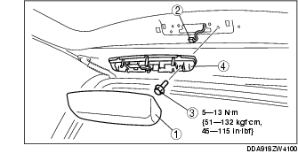

High-mount brake light removal/installation
1. Disconnect the negative battery cable.
2. Remove in the order indicated in the table.

|
1
|
Cover
(See Cover Removal Note.)
|
|
2
|
Connector
|
|
3
|
Bolt
|
|
4
|
High-mount brake light (See High-mount Brake Light Installation Note.)
|
3. Install in the reverse order of removal.
Cover Removal Note
1. Remove the cover in the direction shown by the arrow.

High-mount Brake Light Installation Note
1. Pass the wiring harness through the high-mount brake light hole, then install the light to the liftgate.